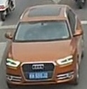

Dans le cadre du Master 2 Informatique Graphique et Analyse d'Images de l'Université Paul Sabatier de Toulouse, l'équipe Re-Id s'est consacrée à ré-identifier des véhicules dans un ensemble de vidéos par apprentissage profond. Le principe général du Chef-d'Oeuvre consiste en l'implantation de travaux de recherches proposés récemment. L'équipe a répondu au sujet proposé par Alain Crouzil, enseignant chercheur à l'Institut de Recherche dans l'équipe Traitement et Compréhension d'Images .
La multiplication des caméras de surveillance permet de fournir de très nombreuses vidéos susceptibles de contenir des informations importantes pour les enquêtes liées à des activités criminelles ou terroristes. Mais l'analyse de ces vidéos, qui peuvent atteindre plusieurs milliers d'heures d'enregistrements, est une tâche difficile qui nécessite beaucoup de temps et d'attention de la part des enquêteurs. Il y a donc un besoin urgent d'outils pour faciliter leurs recherches. La ré-identification de véhicules et, surtout, la ré-identification de personnes sont des domaines d'application de la vision par ordinateur qui ont fait l'objet de nombreux travaux récents faisant appel aux techniques d'apprentissage profond. Liu et al. [1] ont été les premiers à proposer l'utilisation d'un réseau de neurones convolutif pour la ré-identification de véhicules. Ils ont également constitué le jeu de données VeRI .
La technique utilisé dans ce projet est la méthode FACT. Cette méthode combine des descripteurs de couleurs avec des descripteurs SIFT ainsi que les sorties d'une couche du réseau de neurones GoogleNet. Le projet est réalisé en Python en utilisant les bibliothèques OpenCv et Keras. Il peut-être récupéré ici.
Quelques exemples du jeu de donnée. |
||
 |
L'interface utilisateur a été construit avec PyQt5 : il s'agit d'un module libre qui permet de lier le langage Python avec la bibliothèque Qt. L'interface à été conçu dans le but de servir de démonstrateur, un algorithme de ré-identification à pour but d'être utilisé sur un ensemble de vidéo en temps réel. Ce n'est pas le but de ce chef d'oeuvre.
Les descripteurs sémantiques sont les informations importantes d'une image, dans le cas de véhicule cela peut-être le nombre de siège ou la forme des phares. Pour extraires ces descripteurs nous avons utilisé le réseau de neurones convolutif GoogleNet en utilisant les poids du jeu de données imageNet auquel nous avons appliqué un réglage fin avec les données VeRi. Une fois l'entrainement du réseau terminé les descripteurs sémantiques sont obtenues en récupérant les valeurs de l'avant dernière couche du réseau de neurones lors de la classification de l'image.
Les Descripteurs de CouleursLa méthode BOW-CN permet de calculer un descripteur de couleur sous la forme d’un vecteur obtenu par le calcul d’un histogramme sur 250 classes obtenues par un algorithme de k-moyenne. Les descripteurs permettant de calculer l’histogramme sont les valeurs des canaux des pixels.
Les Descripteurs de TexturesLa méthode BOW-SIFT permet de calculer un descripteur de texture pour une image à partir d’un modèle d’apprentissage non supervisé de 10000 classes calculées à partir des descripteurs sift des points d’intérêts des images de la base d’apprentissage. On calcul alors un histogramme à 10000 classes qui compte le nombre de point d’intérêts prédit par classe pour une image, cet histogramme est le descripteur de texture BOW-SIFT.
Les Scores FACTLe score FACT consiste à faire la somme pondérés des distances, entre l'image recherché et l'ensemble des images, des différents descripteurs. Les pondérations sont les suivantes :